I’m Azmin Yusmizan, an electrical engineering student with a deep passion for innovation, embedded systems, and sustainable technologies. Over the years, I’ve cultivated a strong technical foundation in electronics, PCB design, signal processing, and automation — shaped by a unique international journey across Malaysia and France.
Studying at institutions like INSA Lyon, IUT Paul Sabatier Toulouse, and Université de Tours has exposed me to diverse technical cultures and collaborative projects, pushing me to be both detail-oriented and adaptable. Whether it’s building smart energy systems, programming embedded devices, or simulating high-frequency antennas, I enjoy turning complex ideas into practical, elegant solutions.
Beyond academics, I’m driven by curiosity, creativity, and a love for continuous learning. I find joy in reading, cooking, sketching, and playing the guitar — all of which balance the intensity of engineering with moments of calm and expression.
4+ Years in France
3 Countries Studied
12+ Technical Projects
Experience
Num’axes – Engineering Internship
April – July 2024
I completed a 3-month internship at Num’axes, a
French company known for designing electronic devices for pet
training, tracking, and behavior.
My mission was to design and realize a custom PCB for a dog collar
system. I handled the analog and digital schematic design, circuit
simulation (LTSpice), protoboard testing, and PCB layout. The
project involved iterative testing, component validation, and
debugging within an R&D environment.
This experience enhanced my practical skills in electronics,
teamwork, and product development under real-world constraints
such as EMC and form factor.
Education
🎓
INSA Lyon
2024 – Present
Bachelor in Electrical Engineering with specialization in embedded
systems, electronics, and automation.
🔌
IUT Paul Sabatier Toulouse III
2022 – 2024
DUT/BUT in Electrical Engineering and Industrial Informatics.
Gained practical experience in automation, microcontrollers, and
signal processing.
🗣️
IUT de Tours – Université de Tours
2021 – 2022
Completed a French language and scientific foundation year for
integration into the French higher education system.
🏫
Sekolah Menengah Sains Jeli
2016 – 2020
Malaysian Science Secondary School. Focused on physics,
mathematics, and general sciences.
Projects
INSA Lyon
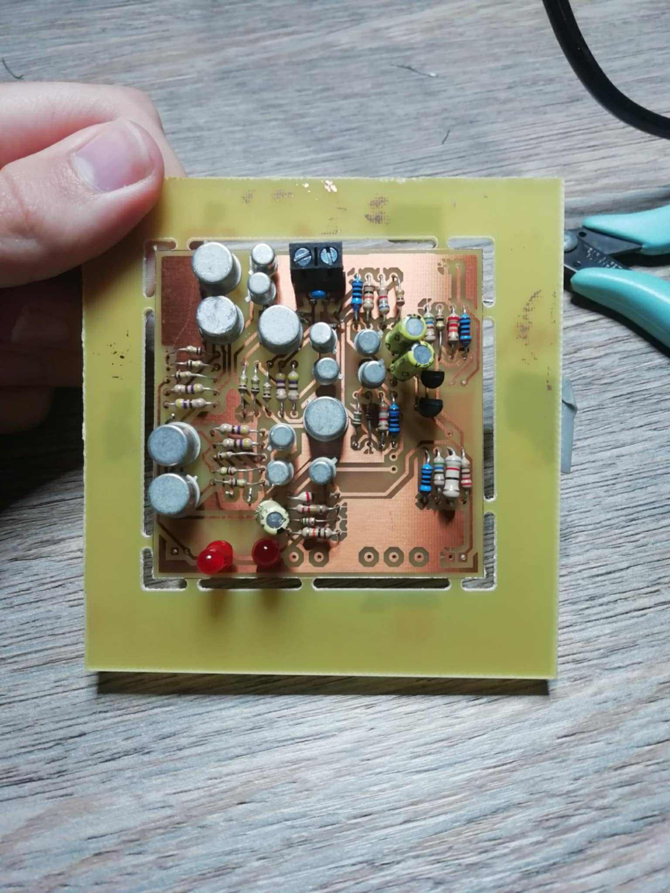
Analog Sonometer
Designed and built a complete sonometer from ground up, including
circuit design, LTspice simulation, prototyping, and PCB
fabrication. Comprehensive study of acoustic measurement principles.
Developed an advanced dust detection system with custom circuit
design and embedded programming. Focused on sensor calibration and
environmental monitoring applications.
Sensors • Embedded Systems • Circuit Design • Testing
INSA Lyon
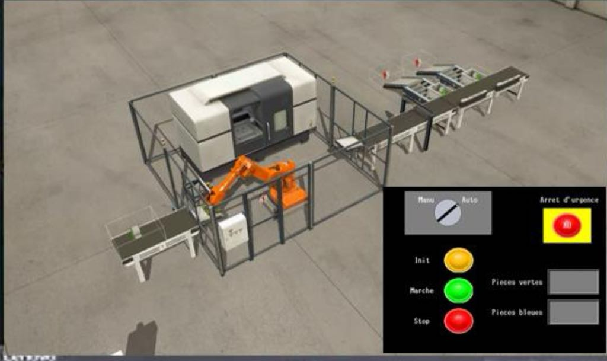
Automated Sorting System
Created GRAFCET-based automation system for industrial piece sorting
by color and number. Implemented complete factory automation
workflow with multiple control stations.
GRAFCET • Automation • Factory Systems • Sorting Systems
INSA Lyon
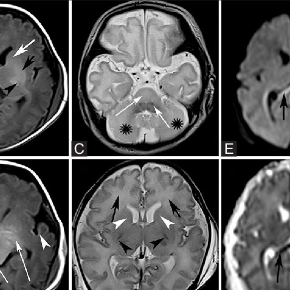
Medical Image Classification
Developed machine learning algorithms for brain image analysis and
classification. Applied numerical analysis techniques and data
processing for medical diagnostics.
Image Processing • Data Analysis • C++
INSA Lyon
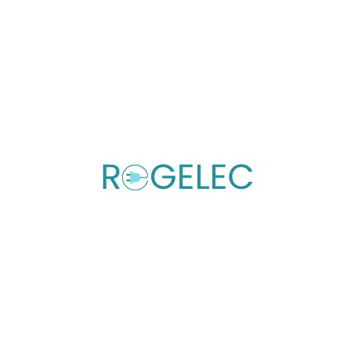
REGELEC Smart Energy Startup
Co-founded startup developing intelligent electrical regulation
systems. Business plan, prototype, and mobile app for optimized
consumption.
Startup • Energy • Mobile App
IUT Paul Sabatier
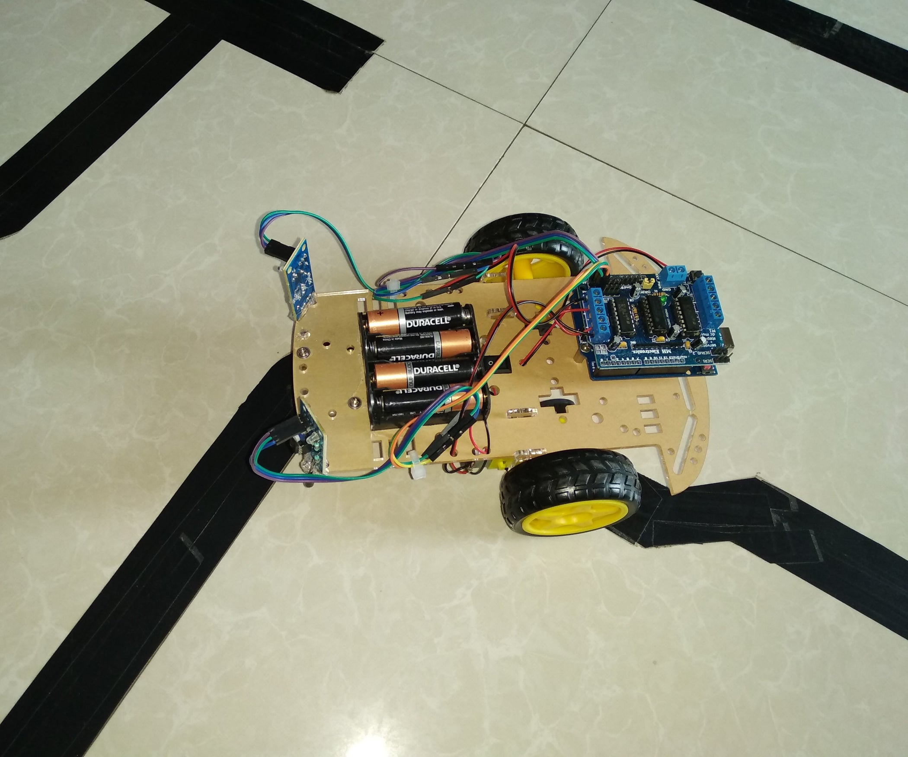
Autonomous Line Follower Robot
Designed complete robotic system from schematic to PCB. Integrated
sensors, motors, and path-following control algorithms.
Robotics • PCB • Control
IUT Paul Sabatier
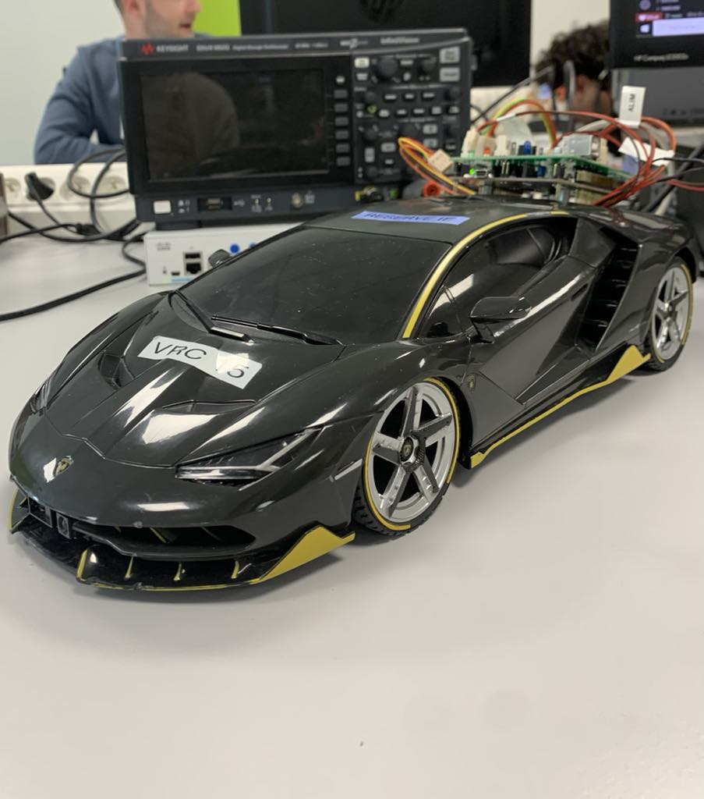
Multi-Function Smart Car
Advanced autonomous vehicle with smartphone integration, multiple
sensors, wireless communication, and versatile functionality for
various applications.
IoT • PCB • Mobile Control • Wireless Communication • Multi-function
Systems
IUT Paul Sabatier
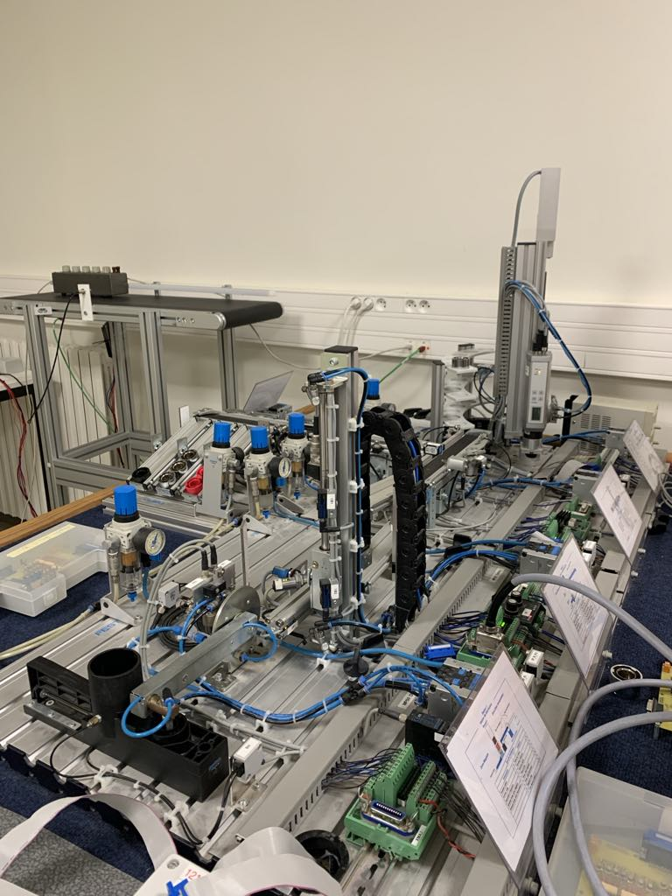
Industrial Pneumatic Control
Developed pneumatic control station using TIA Portal for automated
piece handling. Collaborated in team-based industrial automation
project with multiple interconnected stations.
TIA Portal • Pneumatics • Industrial Control • Team Project
IUT Paul Sabatier
3D Distance Scanner
Built 3D scanning system using STM32 microcontroller, distance
sensors, and servo motors. Created comprehensive scanning and data
acquisition system.
STM32 • Servo Motors • Distance Sensors • 3D Scanning
IUT Paul Sabatier
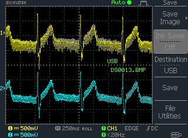
Electrocardiograph System
Designed complete ECG acquisition system with analog amplifiers,
filters, and signal conditioning circuits for biomedical signal
processing.
Biomedical • Amplifiers • Filters • Signal Processing
IUT Paul Sabatier
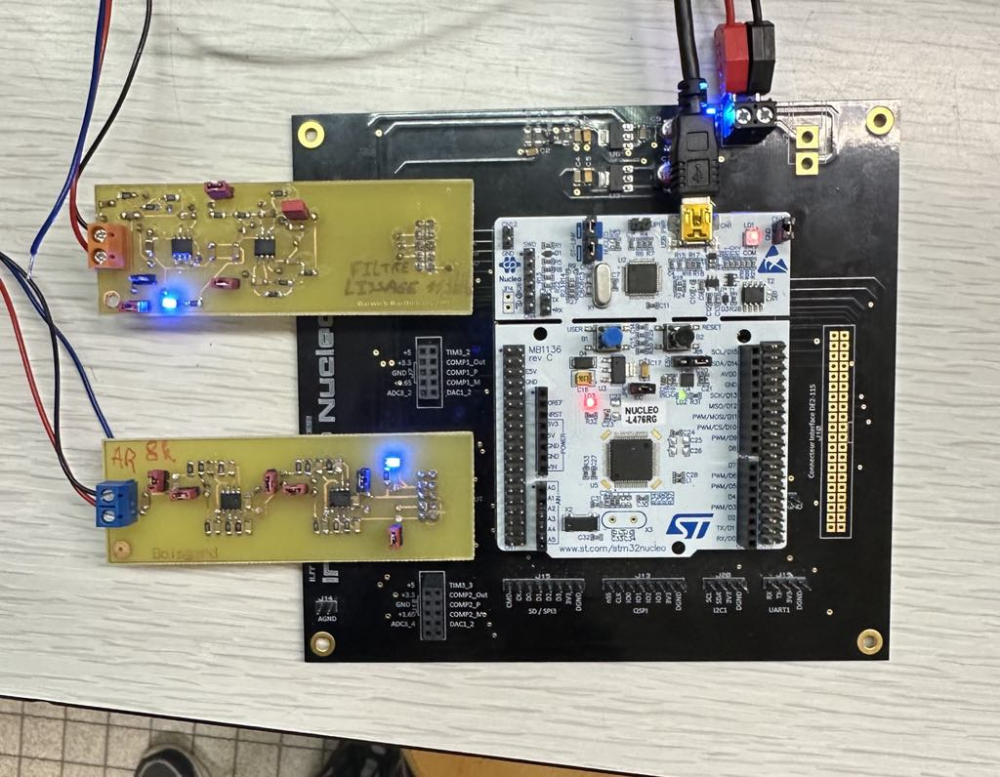
Analog Filter Design
Developed specialized analog filters including anti-aliasing and
smoothing filters. Complete PCB design and implementation for signal
conditioning applications.
Analog Filters • Anti-aliasing • PCB Design • Signal Conditioning
IUT Paul Sabatier
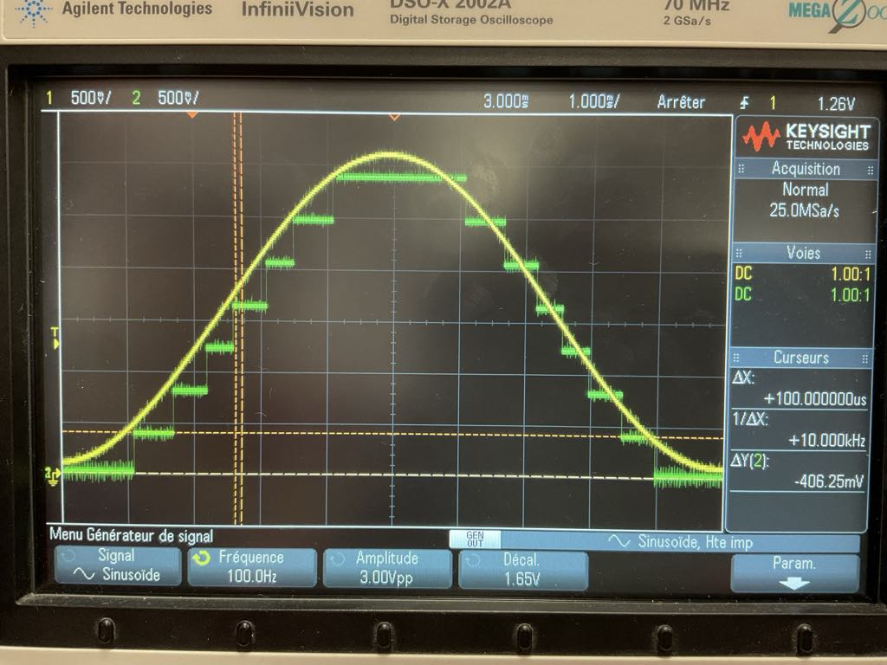
Digital Audio Effects
Programmed digital signal processing algorithms in C for guitar
effects including reverb, distortion, and rock effects. Real-time
audio processing implementation.
C Programming • Audio Processing • Guitar Effects • Digital Signal
Processing
IUT Paul Sabatier
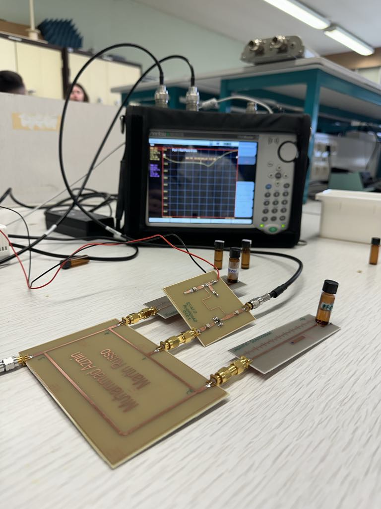
RF Liquid Detection Sensor
Designed RF-based sensor for liquid differentiation (water/ethanol)
using Cadence AWR. Implemented Smith chart analysis and custom PCB
with precision copper traces.
RF Design • Cadence AWR • Smith Chart • Sensor Design
IUT Paul Sabatier
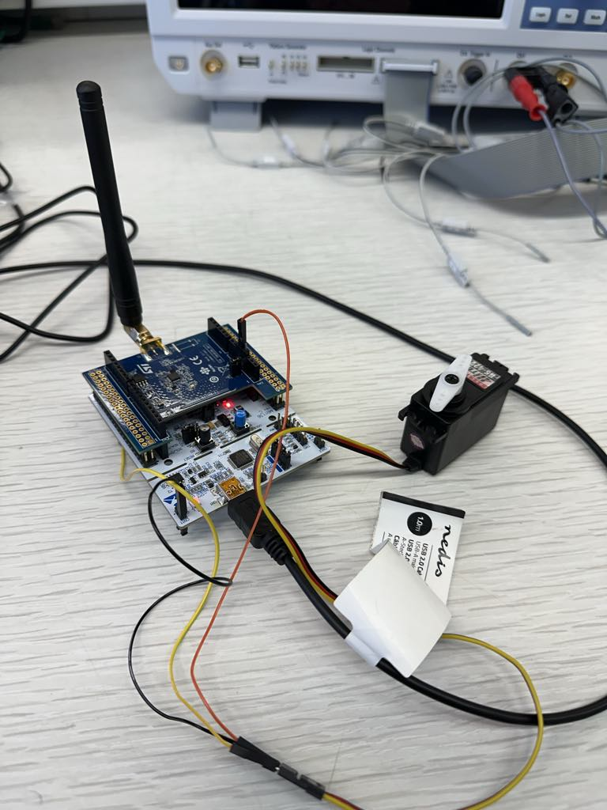
IoT Sensor Network
Developed distributed IoT system with STM32 microcontrollers and
wireless communication. Implemented sensor-actuator network for
environmental monitoring and control.
IoT • STM32 • Wireless Communication • Sensor Networks
IUT Paul Sabatier
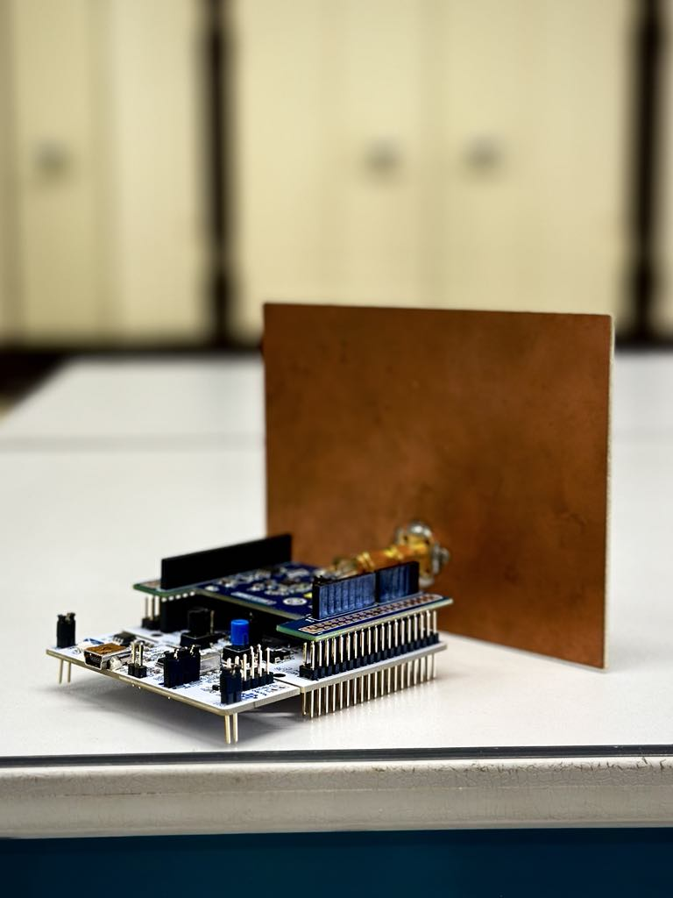
Patch Antenna Optimization
Reverse-engineered and optimized patch antenna design using Cadence
AWR. Achieved -17dB reflection coefficient at target frequency
through systematic optimization.
Comprehensive study of photovoltaic systems including modeling,
simulation, and experimental characterization. Analysis of solar
energy conversion efficiency and optimization.
Solar Energy • Power Electronics • Renewable Energy • System
Analysis
Hobbies
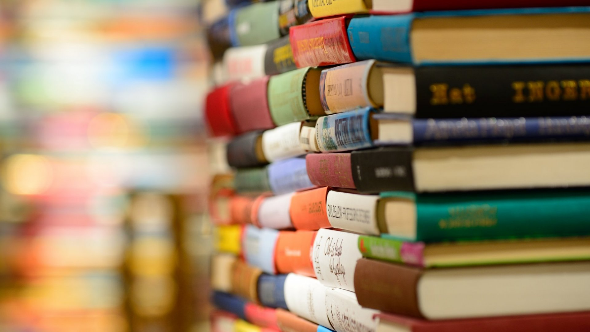
Reading
I enjoy immersing myself in literature, science articles, and
history to expand my knowledge and imagination.
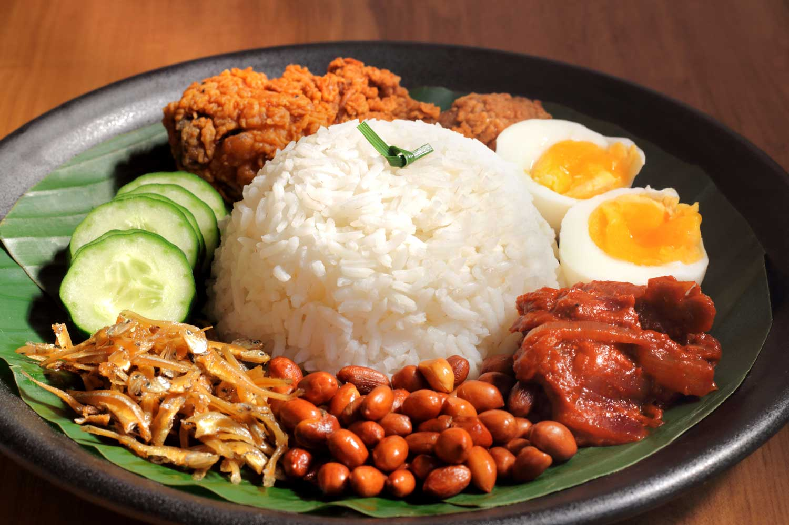
Cooking
I find peace in the kitchen — experimenting with Malaysian dishes
and learning world cuisines.
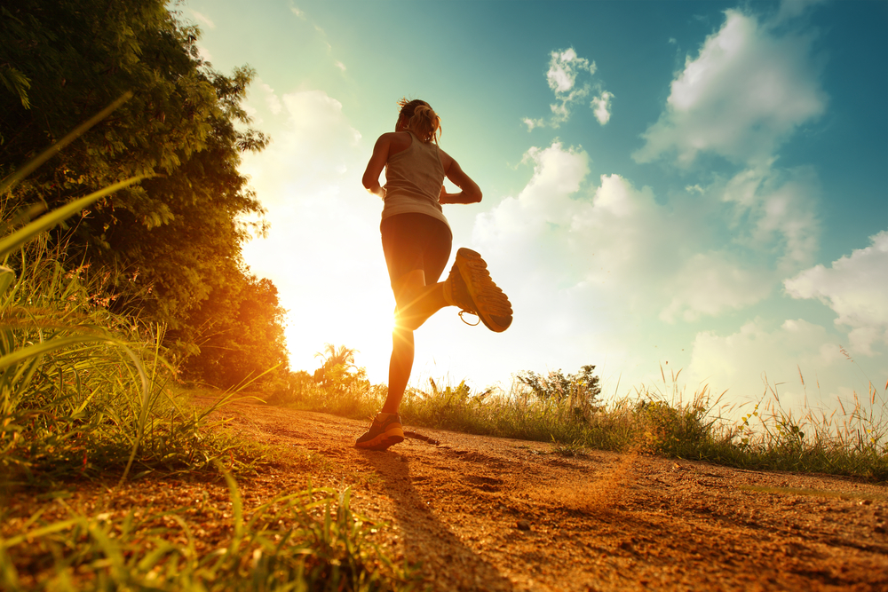
Jogging
Jogging clears my mind and keeps me energized, especially in nature
or around campus parks.
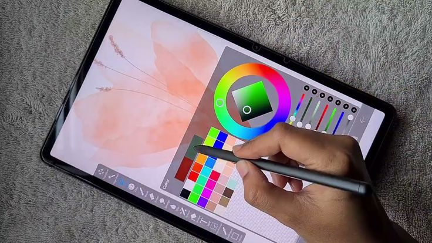
Digital & Traditional Art
I explore both digital illustrations and traditional sketches as a
form of creative expression.
Playing Guitar
Music helps me relax — I love playing acoustic melodies and learning
new chords on my guitar.
Traveling
Sometimes when life gets a bit hard, traveling is the only solution!
I love to travel to new countries and I've visited a lot of
countries before mostly in Europe and Asia.